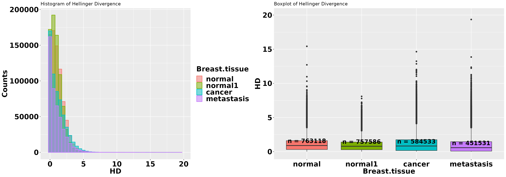
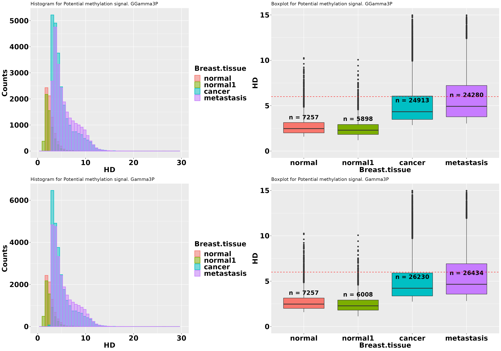
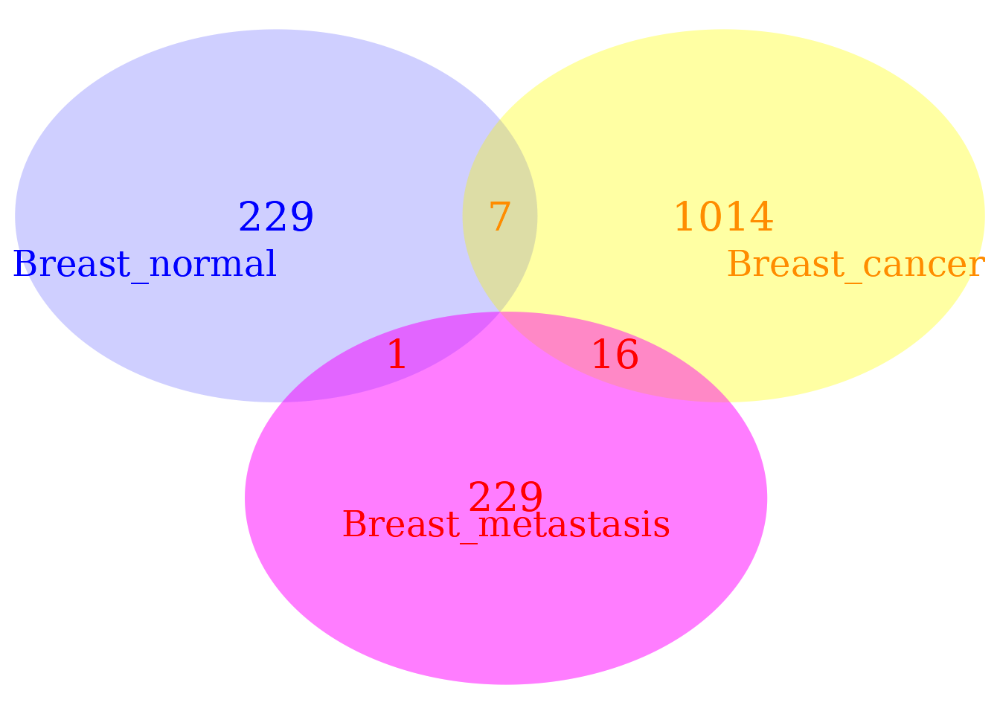

vignettes/cancer_example.Rmd
cancer_example.RmdAbstract
An example of methylation analysis with Methyl-IT, a novel methylome analysis procedure based on a signal-detection and machine- learning approach, is provided here. Methylation analysis involves a signal detection problem, and the method was designed to discriminate methylation regulatory signal from background noise induced by thermal fluctuations. Methyl-IT enhances the resolution of genome methylation behavior to reveal network-associated responses, offering resolution of gene pathway influences not attainable with previous methods. Herein, an example of MethylIT application to the analysis of breast cancer methylomes is presented.
MethylIT is an R package for methylome analysis based on a signal-detection machine learning approach (SD-ML). This approach is postulated to provide greater sensitivity for resolving true signal from the methylation background within the methylome (1, 2). Because the biological signal created within the dynamic methylome environment characteristic of plants is not free from background noise, the approach, designated Methyl-IT, includes the application of signal detection theory (3–6).
A basic requirement for the application of signal detection is the knowledge of the probability distribution of the background noise, which is used as null hypothesis in the detection of the methylation signal. This probability distribution is, in general, a member of generalized gamma distribution family, and it can be deduced on a statistical mechanical/thermodynamics basis from DNA methylation induced by thermal fluctuations (1). Herein, we provide an example of Methyl-IT application to the analysis of breast cancer methylomes. Due to the size of human methylome the current example only covers the analysis of chromosome 13. A full description of Methyl-IT application of methylome analysis in plants is given in the manuscript (2).
The R packages required in this example are:
suppressPackageStartupMessages({
library(MethylIT)
library(BiocParallel)
library(ggplot2) # graphic
library(reshape2) # To reshape the data frame
library(grid) # For multiple plots
library(gridExtra) # For multiple plots
library(VennDiagram)
library(rtracklayer) # To import gene annotation
}
)Methylome datasets of whole-genome bisulfite sequencing (WGBS) are available at Gene Expression Omnibus (GEO DataSets). For the current example, datasets from breast tissues (normal and cancer) and embryonic stem cells will be downloaded from GEO. The data set are downloaded providing the GEO accession numbers for each data set to the function ‘getGEOSuppFiles’ (see the function getGEOSuppFiles help). Some times the ftp site is not available and the information must be manually downloaded from GEO database.
# Embryonic stem cells datasets
esc.files = getGEOSuppFiles(GEO = c("GSM2041690", "GSM2041691", "GSM2041692"),
verbose = FALSE)
# Breast tissues (normal, cancer, metastasis)
cancer.files = getGEOSuppFiles(GEO = c("GSM1279517","GSM1279514",
"GSM1279513"), verbose = FALSE)The file path and name of each downloaded dataset is found in the output variables ‘esc.files’ and ‘cancer.files’.
It important to keep in mind, however, that the file access at the Gene Expression Omnibus - NCBI can be changed at the convenience of GEO database and, in this case, getGEOSuppFile can fail.
Datasets for our example can be read with function readCounts2GRangesList. To specify the reading of only chromosome 13, we can specify the parameter ‘chromosomes = “Chr13”’. The symbol chromosome 13, in this case “Chr13”, must be consistent with the annotation provided in the given GEO dataset. Each file is wholly read with the setting ‘chromosomes = “Chr13”’ and then the GRanges are built only with chromosome 13, which could be time consuming. However, users working on Linux OS can specify the reading of specific lines from each file by using regular expressions. For example, if only chromosomes 1 and 3 are required, then we can set chromosomes = NULL (default) and ‘chromosome.pattern = “^Chr[1,3]”’. This will read all the lines in the downloaded files starting with the words “Chr1” or “Chr3”. If we are interested in chromosomes 1 and 2, then we can set ‘chromosome.pattern = “^Chr[1-2]”’. If all the chromosomes are required, then set chromosomes = NULL and chromosome.pattern = NULL (default). Obviously, before read the files, user must check them to see which annotation was used by the experimenters to denote the chromosomes, e.g., “chr13” or just “13”, etc.
# Embryonic stem cells datasets
ref = readCounts2GRangesList(filenames = esc.files,
sample.id = c("ESC1","ESC2", "ESC3"),
columns = c(seqnames = 1, start = 2,
mC = 4, uC = 5), pattern = "^chr13",
remove = TRUE, verbose = FALSE)
# Breast tissues (normal, cancer, metastasis)
LR = readCounts2GRangesList(filenames = cancer.files,
sample.id = c("Breast_normal", "Breast_cancer",
"Breast_metastasis"),
columns = c(seqnames = 1, start = 2,
mC = 3, uC = 4),
remove = TRUE, pattern = "^13",
chromosome.names = "chr13", verbose = FALSE)In real data analysis, a bigger sample size must be used. For the purpose of this example, to illustrate the application of methylation analysis with Methyl-IT, we will just add an artificial normal sample.
LR$Breast_normal1 <- poolFromGRlist(c(ref[1], LR$Breast_normal,
LR$Breast_normal, LR$Breast_normal,
LR$Breast_normal, LR$Breast_normal),
stat = "mean", num.cores = 6L,
verbose = FALSE)In the metacolumn of the last GRanges object, mC and uC stand for the methylated and unmethylated read counts, respectively. Notice that option ‘remove = TRUE’ remove the decompressed files (default: FALSE, see ? readCounts2GRangesList for more details about this function).
Any two objects can be compared based on some measured variable if, and only if, the measurements where taken in the same metric space, the same coordinate system, in respect to the same origin of coordinates. Usually, in our daily 3D experience, our brain automatically sets up the origin of coordinates equal to zero. The differences found in the comparison depend on the reference used to perform the measurements and from the metric system. The space where the objects are located (or the set of objects) together with the metric is called metric space.
Unfortunately, this is not the case for the methylation process. Each individual from the same population and even each chromosome follows an independent stochastic methylation process. This is not a surprise, since cytosine methylation affect the mechanical properties of DNA molecule with strong dependence of the DNA sequence context (until, at least. 6 bases at both sides of each cytosine site) (7, 8).
To evaluate the methylation differences between individuals from control and treatment we introduce a metric in the bidimensional space of methylation levels \(P_i = (p_i, 1-p_i)\). Vectors \(P_i\) provide a measurement of the uncertainty of methylation levels (2). However, to perform the comparison between the uncertainty of methylation levels from each group of individuals, control \((c)\) and treatment \((t)\), we should estimate the uncertainty variation with respect to the same individual reference on the mentioned metric space. The reason to measure the uncertainty variation with respect to the same reference resides in that even sibling individuals follow an independent ontogenetic development and, consequently, their developments follow independent stochastic processes. This a consequence of the “omnipresent” action of the second law of thermodynamics in living organisms. In the current example, we will create the reference individual by pooling the methylation counts from the embryonic stem cells.
It should be noticed that the results are sensitive to the reference used. The statistics mean, median, or sum of the read counts at each cytosine site of some control samples can be used to create a virtual reference sample. A virtual reference individual can be built with function poolFromGRlist. It is up to the user whether to apply the ‘row sum’, ‘row mean’ or ‘row median’ of methylated and unmethylated read counts at each cytosine site across individuals. Notice that when “mean” is selected the virtual reference individual is the group centroid, which play a fundamental role in multivariate statistic.
Ref = poolFromGRlist(ref, stat = "mean", num.cores = 6L, verbose = FALSE)
Ref## GRanges object with 1560637 ranges and 2 metadata columns:
## seqnames ranges strand | mC uC
## <Rle> <IRanges> <Rle> | <numeric> <numeric>
## [1] chr13 19020631 * | 1 1
## [2] chr13 19020633 * | 2 2
## [3] chr13 19020642 * | 1 1
## [4] chr13 19020643 * | 2 2
## [5] chr13 19020679 * | 1 1
## ... ... ... ... . ... ...
## [1560633] chr13 115108993 * | 1 3
## [1560634] chr13 115109022 * | 1 1
## [1560635] chr13 115109023 * | 3 4
## [1560636] chr13 115109523 * | 2 2
## [1560637] chr13 115109524 * | 1 1
## -------
## seqinfo: 1 sequence from an unspecified genome; no seqlengthsOnly direct lab experiments can reveal whether differences detected with distinct references outside the experimental conditions for control and treatment groups are real. The best reference would be estimated using a subset of individuals from control group. Such a reference will contribute to remove the intragroup variation, in control and in treatment groups, induced by environmental changes external to or not controlled by the experimental conditions.
Methylation analysis for each cytosine position is frequently performed in the bidimensional space of \((methylated, unmethylated)\) read counts. Frequently, Fisher’s exact test is applied to a single cytosine position, under the null hypothesis that the proportions \(p_{ct}=methylated_{ct}/(methylated_{ct}+unmethylated_{ct})\) and \(p_{tt}=methylated_{tt}/(methylated_{tt}+unmethylated_{tt})\) are the same for control and treatment, respectively. In this case, the implicit reference point for the counts at every cytosine positions is \((methylated = 0,unmethylated = 0)\), which corresponds to the point \(P_i = (0, 1)\).
In our case, the Hellinger divergence (one of the metric used, here) of each individual in respect to the reference is the variable to test in place of \((methylated, unmethylated)\) read counts or the methylation levels \(P_i = (p_i, 1-p_i)\).
The use of references is restricted by the thermodynamics basis of the theory. The current information-thermodynamics based approach is supported on the following postulate: “High changes of Hellinger divergences are less frequent than low changes, provided that the divergence is proportional to the amount of energy required to process the change of information in the methylation system”.
The last postulate acknowledges the action of the second law of thermodynamics on the biomolecular methylation system. For the methylation system, it implies that the frequencies of the information divergences between methylation levels must be proportional to a Boltzmann factor (see supplementary information from reference (1)). In other words, the frequencies of information divergences values should follow a trend proportional to an exponential decay.
If we do not observe such a behavior, then either the reference is too far from experimental condition or we are dealing with an extreme situation where the methylation machinery in the cell is dysfunctional. The last situation is found, for example, in the silencing mutation at the gene of cytosine-DNA-methyltransferase in Arabidopsis thaliana. Methylation of 5-methylcytosine at CpG dinucleotides is maintained by MET1 in plants.
To perform the comparison between the uncertainty of methylation levels from each group of individuals, control \((c)\) and treatment $(t) $, the divergence between the methylation levels of each individual is estimated with respect to the same reference on the metric space formed by the vector set \(P_i = (p_i, 1-p_i)\) and the Hellinger divergence \(H\). Basically, the information divergence between the methylation levels of an individual \(j\) and reference sample \(r\) is estimated according to the Hellinger divergence given by the formula:
\[H(\hat p_{ij},\hat p_{ir}) = w_i[(\sqrt{\hat p_{ij}} - \sqrt{\hat p_{ir}})^2+(\sqrt{1-\hat p_{ij}} - \sqrt{1-\hat p_{ir}})^2]\] where $w_i = 2
$, \(m_{ij} = {n_i}^{mC_j}+{n_i}^{uC_j}+1\), \(m_{ir} = {n_i}^{mC_r}+ {n_i}^{uC_r}+1\) and \(j \in {\{c,t}\}\).
This equation for Hellinger divergence is given in reference (9), but other information theoretical divergences can be used as well. Next, the information divergence for control (Breast_normal) and treatment (Breast_cancer and Breast_metastasis) samples are estimated with respect to the reference virtual individual. A Bayesian correction of counts can be selected or not. In a Bayesian framework, methylated read counts are modeled by a beta-binomial distribution, which accounts for both the biological and sampling variations (10–12).
In our case we adopted the Bayesian approach suggested in reference (13) (Chapter 3). In a Bayesian framework with uniform priors, the methylation level can be defined as: \(p = (mC + 1)/ (mC + uC + 2)\). However, the most natural statistical model for replicated BS-seq DNA methylation measurements is beta-binomial (the beta distribution is a prior conjugate of binomial distribution). We consider the parameter \(p\) (methylation level) in the binomial distribution as randomly drawn from a beta distribution. The hyper-parameters \(\alpha\) and \(\beta\) from the beta-binomial distribution are interpreted as pseudo-counts. The information divergence is estimated here using the function estimateDivergence:
date()## [1] "Tue Apr 25 23:57:37 2023"
ptm <- proc.time()
HD = estimateDivergence(ref = Ref,
indiv = LR,
Bayesian = TRUE,
min.coverage = 5,
and.min.cov = FALSE,
high.coverage = 300,
percentile = 0.999,
verbose = FALSE)
cat((proc.time() - ptm)[3]/60, "minutes.", date()) # in min## 0.742 minutes. Tue Apr 25 23:58:22 2023
HD$Breast_cancer## GRanges object with 584538 ranges and 9 metadata columns:
## seqnames ranges strand | c1 t1 c2 t2
## <Rle> <IRanges> <Rle> | <numeric> <numeric> <numeric> <numeric>
## [1] chr13 19020631 * | 1 1 14 24
## [2] chr13 19020633 * | 2 2 14 25
## [3] chr13 19020643 * | 2 2 7 38
## [4] chr13 19020782 * | 1 1 6 56
## [5] chr13 19020786 * | 1 1 10 53
## ... ... ... ... . ... ... ... ...
## [584534] chr13 115108776 * | 1 1 52 20
## [584535] chr13 115108789 * | 2 2 27 43
## [584536] chr13 115108993 * | 1 3 72 5
## [584537] chr13 115109023 * | 3 4 56 36
## [584538] chr13 115109524 * | 1 1 31 9
## p1 p2 TV bay.TV hdiv
## <numeric> <numeric> <numeric> <numeric> <numeric>
## [1] 0.451770 0.372577 -0.131579 -0.0791929 0.0361197
## [2] 0.452016 0.364028 -0.141026 -0.0879881 0.0713908
## [3] 0.452016 0.178801 -0.344444 -0.2732151 0.8097173
## [4] 0.451770 0.118131 -0.403226 -0.3336386 0.8438179
## [5] 0.451770 0.175569 -0.341270 -0.2762003 0.5281366
## ... ... ... ... ... ...
## [584534] 0.451770 0.703359 0.222222 0.251589 0.3807153
## [584535] 0.452016 0.387024 -0.114286 -0.064992 0.0405589
## [584536] 0.449459 0.905400 0.685065 0.455941 2.5160771
## [584537] 0.451113 0.599126 0.180124 0.148013 0.3253924
## [584538] 0.451770 0.737171 0.275000 0.285402 0.4843780
## -------
## seqinfo: 1 sequence from an unspecified genome; no seqlengthsFunction ‘estimateDivergence’ returns a list of GRanges objects with the four columns of counts, the information divergence, and additional columns:
1. The original matrix of methylated ($c_i$) and unmethylated
($t_i$) read counts from control ($i=1$) and treatment ($i=2$) samples.
2. "p1" and "p2": methylation levels for control and treatment,
respectively.
3. "bay.TV": total variation TV = p2 - p1.
4. "TV": total variation based on simple counts: $TV=c1/(c1+t1)-
c2/(c2+t2)$.
5. "hdiv": Hellinger divergence.If Bayesian = TRUE, results are based on the posterior estimations of methylation levels \(p1\) and \(p2\). Filtering by coverage is provided at this step which would be used unless previous filtering by coverage had been applied. This is a pairwise filtering. Cytosine sites with ‘coverage’ > ‘min.coverage’ and ‘coverage’ < ‘percentile’ (e.g., 99.9 coverage percentile) in at least one of the samples are preserved. The coverage percentile used is the maximum estimated from both samples: reference and individual.
For some GEO datasets only the methylation levels for each cytosine site are provided. In this case, Hellinger divergence can be estimated as given in reference (1):
\[H(\hat p_{ij},\hat p_{ir}) = 2 \Big[(\sqrt{\hat p_{ij}} - \sqrt{\hat p_{ir}})^2+(\sqrt{1-\hat p_{ij}} - \sqrt{1-\hat p_{ir}})^2\Big]\]
A descriptive analysis on the distribution of Hellinger divergences of methylation levels is recommended. Like in any other statistical analysis, descriptive statistical analysis help us to detect potential issues in the raw data. It is the user responsibility to perform quality check of his/her dataset before start to apply Methyl-IT. Nevertheless, the quality checking of the raw data is not perfect. So, it is healthy to sees for potential issues.
First, the data of interest (Hellinger divergences, “hdiv”) are selected from the GRanges objects:
normal = HD$Breast_normal[, "hdiv"]
normal1 = HD$Breast_normal1[, "hdiv"]
cancer = HD$Breast_cancer[, "hdiv"]
metastasis = HD$Breast_metastasis[, "hdiv"]Next, a single GRanges object is built from the above set of GRanges objects using the function uniqueGRanges. Notice that the number of cores to use for parallel computation can be specified.
hd = uniqueGRanges(list(normal, normal1, cancer, metastasis),
missing = NA, verbose = FALSE)
colnames(mcols(hd)) <- c("normal", "normal1", "cancer", "metastasis")
hd## GRanges object with 793551 ranges and 4 metadata columns:
## seqnames ranges strand | normal normal1 cancer
## <Rle> <IRanges> <Rle> | <numeric> <numeric> <numeric>
## [1] chr13 19020631 * | 0.16998196 0.15993886 0.0361197
## [2] chr13 19020633 * | 0.55408069 0.43588832 0.0713908
## [3] chr13 19020643 * | 0.35265356 0.34033618 0.8097173
## [4] chr13 19020680 * | 0.00658000 0.00809711 NA
## [5] chr13 19020687 * | 0.00676718 0.00155600 NA
## ... ... ... ... . ... ... ...
## [793547] chr13 115108776 * | 0.472447 0.452470 0.3807153
## [793548] chr13 115108789 * | 0.412965 0.374928 0.0405589
## [793549] chr13 115108993 * | 2.033301 1.778906 2.5160771
## [793550] chr13 115109023 * | 2.490385 2.362445 0.3253924
## [793551] chr13 115109524 * | 0.756880 0.713464 0.4843780
## metastasis
## <numeric>
## [1] 1.1844907
## [2] 1.8145776
## [3] 0.0171404
## [4] NA
## [5] NA
## ... ...
## [793547] NA
## [793548] NA
## [793549] 2.406915
## [793550] 0.523286
## [793551] NA
## -------
## seqinfo: 1 sequence from an unspecified genome; no seqlengthsNow, the Hellinger divergences estimated for each sample are in a single matrix on the metacolumn of the GRanges object and we can proceed to build the histogram and boxplot graphics for these data. Finally, the data included in the graphic are:
# Define an auxiliary function
fun_length <- function(x){
return(data.frame(y = median(x, na.rm = TRUE) + 1,
label = paste0("n = ", length(x))))
}
data <- data.frame(normal = hd$normal, normal1 = hd$normal1,
cancer = hd$cancer, metastasis = hd$metastasis)
data = suppressMessages(melt(data))
colnames(data) <- c("Breast.tissue", "HD")
data = data[data$HD > 0, ]
DataFrame(data)## DataFrame with 3174204 rows and 2 columns
## Breast.tissue HD
## <factor> <numeric>
## 1 normal 0.16998196
## 2 normal 0.55408069
## 3 normal 0.35265356
## 4 normal 0.00658000
## 5 normal 0.00676718
## ... ... ...
## NA.617427 NA NA
## NA.617428 NA NA
## 3174202 metastasis 2.406915
## 3174203 metastasis 0.523286
## NA.617429 NA NA
p1 = ggplot(data, aes(x = HD, fill = Breast.tissue, colour = Breast.tissue)) +
geom_histogram(alpha = 0.5, binwidth = 0.5, position = "identity",
na.rm = TRUE, size = 0.7) + xlim(-0.4,20) +
theme(axis.title.x = element_text(face = "bold", size = 20),
axis.text.x = element_text(face = "bold", size = 20,
color = "black", hjust = 0.5,
vjust = 0.75),
axis.text.y = element_text(face = "bold", size = 20, color = "black"),
axis.title.y = element_text(face = "bold", size = 20,color = "black"),
legend.text = element_text(size = 20, face = "bold"),
legend.title = element_text(size = 20, face = "bold")) +
ylab( "Counts" ) +
ggtitle("Histogram of Hellinger Divergence")## Warning: Using `size` aesthetic for lines was deprecated in ggplot2 3.4.0.
## ℹ Please use `linewidth` instead.
## This warning is displayed once every 8 hours.
## Call `lifecycle::last_lifecycle_warnings()` to see where this warning was
## generated.
# For visualization purposes HD is limited to the interval 0 to 50
dt = data[ which(data$HD < 50), ]
p2 = ggplot(dt,aes(x = Breast.tissue, y = HD , fill = Breast.tissue)) +
geom_boxplot(na.rm = TRUE) + ylim(-0.1, 20) +
stat_summary(fun.data = fun_length, geom = "text",
position = position_dodge(width = 0.9), vjust = 1,
size = 6, fontface = "bold") +
theme(axis.title.x = element_text(face = "bold", size = 20),
axis.text.x = element_text(face = "bold", size = 20, color = "black",
hjust = 0.5, vjust = 0.75),
axis.text.y = element_text(face = "bold", size = 20, color = "black"),
axis.title.y = element_text(face = "bold", size = 20,color = "black"),
legend.position = "none" ) +
ggtitle("Boxplot of Hellinger Divergence")
grid.arrange(p1, p2, ncol = 2)## Warning: Removed 6 rows containing non-finite values (`stat_summary()`).
Except for the tail, most of the methylation changes occurred under the area covered by the density curve corresponding to the normal breast tissue. This is theoretically expected. This area is explainable in statistical physical terms and, theoretically, it should fit a Weibull distribution. The tails regions cover the methylation changes that, with high probability, are not induced by thermal fluctuation and are not addressed to stabilize the DNA molecule. These changes are methylation signal. Professor David J. Miller (Department of Electrical Engineering, Penn State) proposed modeling the distribution as a mixed Weibull distribution to simultaneously describe the background methylation noise and the methylation signal (personal communication, January, 2018). This model approach seems to be supported by the above histogram, but it must be studied before being incorporated in a future version of Methyl-IT.
According to the parameter values set for the function estimateDivergence, for each cytosine site, at least one individual must have a 10 reads or more, and the maximum coverage must be 500 or less.
# Maximum coverage at each cytosine site
covr <- lapply(HD, function(x) {
cov1 <- x$c1 + x$t1
cov2 <- x$c2 + x$t2
cov <- apply(cbind(cov1, cov2), 1, max)
return(cov)
})
# Quantiles
do.call(rbind, lapply(covr, function(x) {
q60 <- quantile(x, 0.6)
q9999 <- quantile(x, 0.9999)
idx1 <- which(x >= q60)
idx2 <- which(x <= 500)
q95 <- quantile(x, 0.95)
idx <- intersect(idx1, idx2)
return(c(round(summary(x)), q60,
quantile(x, c(0.95, 0.99, 0.999, 0.9999)),
num.siteGreater_8 = sum(x >= 8),
q60_to_500 = sum((x >= q60) & (x <= 500)),
num.siteGreater_500 = sum(x > 500)))})
)## Min. 1st Qu. Median Mean 3rd Qu. Max. 60% 95% 99% 99.9%
## Breast_normal 5 19 30 31 41 291 34 57 69 81
## Breast_cancer 5 18 31 37 51 266 38 88 112 137
## Breast_metastasis 5 14 27 31 43 281 32 70 91 115
## Breast_normal1 5 17 26 27 35 279 29 48 58 68
## 99.99% num.siteGreater_8 q60_to_500 num.siteGreater_500
## Breast_normal 94.0000 747005 319227 0
## Breast_cancer 165.0000 569474 234247 0
## Breast_metastasis 158.8469 435153 187884 0
## Breast_normal1 80.0000 738787 318786 0The quantiles indicates acceptable values for the coverages. Descriptive statistics for methylated reads can be checked as well.
# Maximum coverage at each cytosine site
methc <- lapply(HD, function(x) {
r <- apply(cbind(x$c1, x$c2), 1, max)
return(r)
})
# Quantiles
do.call(rbind, lapply(methc, function(x) {
q10 <- quantile(x, 0.1)
q60 <- quantile(x, 0.6)
q9999 <- quantile(x, 0.9999)
idx1 <- which(x >= q60)
idx2 <- which(x <= 500)
q95 <- quantile(x, 0.95)
idx <- intersect(idx1, idx2)
return(c(round(summary(x)), q10, q60,
quantile(x, c(0.95, 0.99, 0.999, 0.9999)),
num.siteGreater_8 = sum(x >= 8),
q60_to_500 = sum((x >= q60) & (x <= 500)),
num.siteGreater_500 = sum(x > 500)))})
)## Min. 1st Qu. Median Mean 3rd Qu. Max. 10% 60% 95% 99% 99.9%
## Breast_normal 4 14 24 25 34 265 7 28 49 60 72
## Breast_cancer 4 10 21 27 38 252 5 27 74 98 123
## Breast_metastasis 4 7 16 21 30 234 4 21 56 75 98
## Breast_normal1 4 12 20 21 29 258 6 24 41 50 60
## 99.99% num.siteGreater_8 q60_to_500 num.siteGreater_500
## Breast_normal 84.0000 677552 309300 0
## Breast_cancer 149.5463 472596 237092 0
## Breast_metastasis 121.0000 328544 184064 0
## Breast_normal1 70.0000 664530 304195 0The critical values from empirical cumulative probability distributions will be used in the downstream analysis.
critical.val <- do.call(rbind, lapply(HD, function(x) {
hd.95 = quantile(x$hdiv, 0.95)
tv.95 = quantile(abs(x$bay.TV), 0.95)
return(c(tv = tv.95, hd = hd.95))
}))
critical.val## tv.95% hd.95%
## Breast_normal 0.4625591 2.888832
## Breast_cancer 0.4795708 3.413531
## Breast_metastasis 0.4638647 3.104796
## Breast_normal1 0.4442791 2.476178A basic requirement for the application of signal detection is the knowledge of the probability distribution of the background noise. Probability distribution, as a Weibull distribution model, can be deduced on a statistical mechanical/thermodynamics basis for DNA methylation induced by thermal fluctuations (1).
Assuming that this background methylation variation is consistent with a Poisson process, it can be distinguished from variation associated with methylation regulatory machinery, which is non-independent for all genomic regions (1). An information-theoretic divergence to express the variation in methylation induced by background thermal fluctuations will follow a Weibull distribution model, provided that it is proportional to the minimum energy dissipated per bit of information associated with the methylation change.
The nonlinear fit to a Weibull distribution model is performed by the function nonlinearFitDist. In general, an information divergence of methylation levels will follow a probability distribution from the family of generalized gamma distribution. Next, the best fitted model will be selected from one of the following distributions: two- and three-parameter Weibull distributions, gamma with two- and three-parameters (“Gamma2P” or “Gamma3P”), and generalized gamma with three-parameter (“GGamma3P”).
The best model is selected on the basis of Akaike’s information criterion and the correlation coefficient of cross-validations for the nonlinear regressions (R.Cross.val). These criteria evaluate different information inferred from the models. AIC deals with the trade-off between the goodness of fit (GOF) of the model and the complexity of the model, while R.Cross.val provides information on the prediction power/performance of the model when confronted with external dataset. Cross-validations for the nonlinear regressions (R.Cross.val) were performed as described in reference (14). In addition, Stein’s formula for adjusted R squared (\(\rho\)) was used as an estimator of the average cross-validation predictive power (14).
In general, the best fitted model yields the best DMP classification performance (see below). However, on special dataset, as the used in the current example. Function gofReport search for the best fitted model between the set of models requested by the user.
The best model including “GGamma3P” model:
d <- c("Weibull2P", "Weibull3P", "Gamma2P", "Gamma3P", "GGamma3P")
gof_1 <- gofReport(HD = HD, column = 9L, model = d,
num.cores = 6L,
output = "all", verbose = FALSE)##
|
| | 0%
|
|============== | 20%
|
|============================ | 40%
|
|========================================== | 60%
|
|======================================================== | 80%
|
|======================================================================| 100%
##
## *** Creating report ...
gof_1$bestModel## Breast_normal Breast_cancer Breast_metastasis Breast_normal1
## "GGamma3P" "GGamma3P" "GGamma3P" "GGamma3P"The best model excluding “GGamma3P” model:
d <- c("Weibull2P", "Weibull3P", "Gamma2P", "Gamma3P")
gof_2 <- gofReport(HD = HD,
column = 9L,
model = d,
num.cores = 6L,
output = "all",
verbose = FALSE)##
|
| | 0%
|
|================== | 25%
|
|=================================== | 50%
|
|==================================================== | 75%
|
|======================================================================| 100%
##
## *** Creating report ...
gof_2$bestModel## Breast_normal Breast_cancer Breast_metastasis Breast_normal1
## "Weibull2P" "Gamma2P" "Gamma2P" "Weibull2P"When “GGamma3P” model is included, the goodness-of-fit indicators used here suggest that it is best fitted model. However, a final decision must take into account the DMP classification performance as well (see below), which is accomplished after a signal detection step. The reader must keep in mind that we are dealing here with numerical algorithms, which are not perfect. Depending on dataset, the numerical computation will confront different challengers. The difference between g3p_R.Cross.val and gg3p_R.Cross.val suggests that model predictions powers for “GGamma3P” and “Gamma3P” are close.
gof_1$stats## w2p_AIC w2p_R.Cross.val w3p_AIC w3p_R.Cross.val g2p_AIC
## Breast_normal -3194788 0.9955368 Inf 0 -3165495
## Breast_cancer -2001256 0.9906861 Inf 0 -2153574
## Breast_metastasis -1635630 0.9910272 Inf 0 -1847487
## Breast_normal1 -3371455 0.9964338 Inf 0 -3326676
## g2p_R.Cross.val g3p_AIC g3p_R.Cross.val gg3p_AIC
## Breast_normal 0.9945423 Inf 0 -4452069
## Breast_cancer 0.9912956 Inf 0 -2813248
## Breast_metastasis 0.9940890 Inf 0 -2324142
## Breast_normal1 0.9957575 Inf 0 -5057365
## gg3p_R.Cross.val bestModel
## Breast_normal 0.9989777 gg3p
## Breast_cancer 0.9971319 gg3p
## Breast_metastasis 0.9979396 gg3p
## Breast_normal1 0.9995615 gg3pIt is worthy to observe that although in the current example we successfully performed the nonlinear fit for GGamma3P model, this is not the general case when the number of cytosine sites goes close or above \(10^6\), for which the computational cost is very high. The nonlinear fit of GGamma3P or GGamma4P is, in general, difficult since two different set of estimated parameters could produce very close distribution curves. Also, it is important to check the value of the scaling parameter from each distribution. The numerical algorithms could find the best fitted model with scaling parameter values close to zero, say e.g. \(10^{-8}\), and with the highest GOFs. Situations like this are biologically meaningless and the fitted models must be discarded (1).
The information thermodynamics-based approach is postulated to provide greater sensitivity for resolving true signal from the thermodynamic background within the methylome (1). Since the biological signal created within the dynamic methylome environment characteristic of living organisms is not free from background noise, the approach, designated Methyl-IT, includes the application of signal detection theory (3–6). Signal detection is a critical step to increase sensitivity and resolution of methylation signal by reducing the signal-to-noise ratio and objectively controlling the false positive rate and prediction accuracy/risk.
The first estimation in our signal detection step is the identification of the cytosine sites carrying potential methylation signal \(PS\). The methylation regulatory signal does not hold the theoretical distribution and, consequently, for a given level of significance \(\alpha\) (Type I error probability, e.g. \(\alpha = 0.05\)), cytosine positions \(k\) with information divergence \(H_k >= H_{\alpha = 0.05}\) can be selected as sites carrying potential signals \(PS\). The value of \(\alpha\) can be specified.
For example, potential signals with \(H_k > H_{\alpha = 0.01}\) can be selected. For each sample, cytosine sites are selected based on the corresponding fitted theoretical distribution model estimated in the previous step. Additionally, since cytosine with \(|TV_{d_k}| < 0.1\) are the most abundant sites, depending on the sample (experiment), cytosine positions \(k\) with \(H_k >= H_{\alpha = 0.05}\) and \(|TV_{d_k}| < 0.1\) can be observed. To prevent the last situation we can select the \(PS\) with the additional constraint \(|TV_{d_k}| > TV_0\), where \(TV_0\) (‘tv.cut’) is a user specified value. The \(PS\) is detected with the function getPotentialDIMP:
PS1 = getPotentialDIMP(LR = HD, dist.name = gof_1$bestModel, nlms = gof_1$nlms,
div.col = 9, alpha = 0.05, tv.col = 8, tv.cut = 0.5)
PS2 = getPotentialDIMP(LR = HD, dist.name = gof_2$bestModel, nlms = gof_2$nlms,
div.col = 9, alpha = 0.05, tv.col = 8, tv.cut = 0.5)
PS1$Breast_normal## GRanges object with 372 ranges and 10 metadata columns:
## seqnames ranges strand | c1 t1 c2 t2
## <Rle> <IRanges> <Rle> | <numeric> <numeric> <numeric> <numeric>
## [1] chr13 20325510 * | 4 4 60 0
## [2] chr13 20414617 * | 3 3 59 0
## [3] chr13 20647291 * | 2 2 59 0
## [4] chr13 20658445 * | 4 4 59 0
## [5] chr13 20755264 * | 2 2 62 0
## ... ... ... ... . ... ... ... ...
## [368] chr13 114597079 * | 3 3 63 0
## [369] chr13 114839635 * | 3 3 62 0
## [370] chr13 114840738 * | 3 3 63 0
## [371] chr13 115057919 * | 4 4 58 0
## [372] chr13 115090233 * | 2 2 61 0
## p1 p2 TV bay.TV hdiv wprob
## <numeric> <numeric> <numeric> <numeric> <numeric> <numeric>
## [1] 0.450574 0.952109 0.5 0.501535 5.73503 1.50139e-11
## [2] 0.450303 0.951394 0.5 0.501091 4.56377 1.27451e-05
## [3] 0.450029 0.951394 0.5 0.501365 3.36306 8.66788e-03
## [4] 0.450574 0.951394 0.5 0.500820 5.69272 2.94217e-11
## [5] 0.450029 0.953476 0.5 0.503447 3.42776 6.89877e-03
## ... ... ... ... ... ... ...
## [368] 0.450303 0.954131 0.5 0.503828 4.68786 4.56271e-06
## [369] 0.450303 0.953476 0.5 0.503173 4.65774 5.89952e-06
## [370] 0.450303 0.954131 0.5 0.503828 4.68786 4.56271e-06
## [371] 0.450574 0.950658 0.5 0.500084 5.64958 5.74997e-11
## [372] 0.450029 0.952802 0.5 0.502773 3.40662 7.44184e-03
## -------
## seqinfo: 1 sequence from an unspecified genome; no seqlengths
PS2$Breast_normal## GRanges object with 237 ranges and 10 metadata columns:
## seqnames ranges strand | c1 t1 c2 t2
## <Rle> <IRanges> <Rle> | <numeric> <numeric> <numeric> <numeric>
## [1] chr13 20325510 * | 4 4 60 0
## [2] chr13 20414617 * | 3 3 59 0
## [3] chr13 20658445 * | 4 4 59 0
## [4] chr13 21002790 * | 4 4 62 0
## [5] chr13 21289664 * | 2 2 69 0
## ... ... ... ... . ... ... ... ...
## [233] chr13 114497528 * | 3 3 60 0
## [234] chr13 114597079 * | 3 3 63 0
## [235] chr13 114839635 * | 3 3 62 0
## [236] chr13 114840738 * | 3 3 63 0
## [237] chr13 115057919 * | 4 4 58 0
## p1 p2 TV bay.TV hdiv wprob
## <numeric> <numeric> <numeric> <numeric> <numeric> <numeric>
## [1] 0.450574 0.952109 0.5 0.501535 5.73503 0.00772371
## [2] 0.450303 0.951394 0.5 0.501091 4.56377 0.02095007
## [3] 0.450574 0.951394 0.5 0.500820 5.69272 0.00800731
## [4] 0.450574 0.953476 0.5 0.502902 5.81721 0.00720116
## [5] 0.450029 0.957704 0.5 0.507675 3.56496 0.04900990
## ... ... ... ... ... ... ...
## [233] 0.450303 0.952109 0.5 0.501806 4.59571 0.0203880
## [234] 0.450303 0.954131 0.5 0.503828 4.68786 0.0188494
## [235] 0.450303 0.953476 0.5 0.503173 4.65774 0.0193392
## [236] 0.450303 0.954131 0.5 0.503828 4.68786 0.0188494
## [237] 0.450574 0.950658 0.5 0.500084 5.64958 0.0083073
## -------
## seqinfo: 1 sequence from an unspecified genome; no seqlengthsModel “GGamma3P” reported 20263 - 11314 = 8949 more DMPs in the normal tissue than model “Gamma3P”.
Notice that the total variation distance \(TV_d=|TV|\) is an information divergence as well and that it can be used in place of Hellinger divergence (1). The set of vectors \(P_i = (p_i, 1-p_i)\) and distance function \(TV_d\) integrate a metric space (2). In particular, after takes the Manhattan distance between healthy individuals and patients methylation levels we have:
\[M_d(p_{ij}, p_{ir})=\frac{1}{2}(|\hat p_{ij} - \hat p_{ir}| + | (1-\hat p_{ij}) - (1-\hat p_{ir})|)=|\hat p_{ij} - \hat p_{ir}|=TV_d(p_{ij}, p_{ir})\].
That is, the absolute difference of methylation levels is a particular case of Manhattan distance, which is named total variation distance \(TV_d\). The quantitative effect of the vector components \(1-\hat p_{ij}\) and \(1-\hat p_{ir}\) (in our case, the effect of unmethylated read counts) is not present in \(TV_d\) as in \(H(\hat p_{ij},\hat p_{ir})\).
As before, a single GRanges object is built from the above set GRanges objects using the function uniqueGRanges, and the Hellinger divergences of the cytosine sites carrying \(PS\) (for each sample) are located in a single matrix on the metacolumn of the GRanges object.
# Define an auxiliar function
fun_length <- function(x){
return(data.frame(y = median(x) + 1.5, label = paste0("n = ", length(x))))
}
# The data to be used in the boxplot
ps1 = uniqueGRanges(PS1, missing = NA, columns = 9, verbose = FALSE,
num.cores = 6L)
colnames(mcols(ps1)) <- c("normal", "cancer", "metastasis", "normal1")
dat1 = data.frame(normal = ps1$normal, normal1 = ps1$normal1,
cancer = ps1$cancer, metastasis = ps1$metastasis)
dat1 = suppressMessages(melt(dat1))
colnames(dat1) <- c("Breast.tissue", "HD")
idx <- which(is.na(dat1$HD))
dat1 <- dat1[-idx, ] # To remove missing data
ps2 <- uniqueGRanges(PS2, missing = NA, columns = 9, verbose = FALSE,
num.cores = 6L)
colnames(mcols(ps2)) <- c("normal", "cancer", "metastasis", "normal1")
dat2 = data.frame(normal = ps2$normal, normal1 = ps2$normal1,
cancer = ps2$cancer, metastasis = ps2$metastasis)
dat2 = suppressMessages(melt(dat2))
colnames(dat2) <- c("Breast.tissue", "HD")
idx <- which(is.na(dat2$HD))
dat2 <- dat2[-idx, ] # To remove missing data
p1 = ggplot(dat1, aes(x = HD, fill = Breast.tissue, colour = Breast.tissue)) +
geom_histogram(alpha = 0.5, bins = 50, position = "identity",
na.rm = TRUE, size = 0.7) + ylab("Counts") + xlim(0,30) +
theme(axis.title.x = element_text(face = "bold", size = 20),
axis.text.x = element_text(face = "bold", size = 20, color = "black",
hjust = 0.5, vjust = 0.75),
axis.text.y = element_text(face = "bold", size = 20, color = "black"),
axis.title.y = element_text(face = "bold", size = 20,color = "black"),
legend.text = element_text(size = 20, face = "bold"),
legend.title = element_text(size = 20, face = "bold") ) +
ggtitle("Histogram for Potential methylation signal. GGamma3P")
p2 = ggplot(dat1,aes(x = Breast.tissue, y = HD , fill = Breast.tissue)) +
geom_boxplot(na.rm = TRUE) + ylim(0, 15) +
stat_summary(fun.data = fun_length, geom = "text", na.rm = TRUE,
position = position_dodge(width = 0.9), vjust = 1,
size = 6, fontface = "bold") +
geom_hline(yintercept = 6, linetype="dashed", color = "red") +
theme(axis.title.x = element_text(face = "bold", size = 20),
axis.text.x = element_text(face = "bold", size = 20, color = "black",
hjust = 0.5, vjust = 0.75),
axis.text.y = element_text(face = "bold", size = 20, color = "black"),
axis.title.y = element_text(face = "bold", size = 20,color = "black"),
legend.position = "none" ) +
ggtitle("Boxplot for Potential methylation signal. GGamma3P")
p3 = ggplot(dat2, aes(x = HD, fill = Breast.tissue, colour = Breast.tissue)) +
geom_histogram(alpha = 0.5, bins = 50, position = "identity",
na.rm = TRUE, size = 0.7) + ylab("Counts") + xlim(0,30) +
theme(axis.title.x = element_text(face = "bold", size = 20),
axis.text.x = element_text(face = "bold", size = 20, color = "black",
hjust = 0.5, vjust = 0.75),
axis.text.y = element_text(face = "bold", size = 20, color = "black"),
axis.title.y = element_text(face = "bold", size = 20,color = "black"),
legend.text = element_text(size = 20, face = "bold"),
legend.title = element_text(size = 20, face = "bold")) +
ggtitle("Histogram for Potential methylation signal. Gamma3P")
p4 = ggplot(dat2,aes(x = Breast.tissue, y = HD , fill = Breast.tissue)) +
geom_boxplot(na.rm = TRUE) + ylim(0, 15) +
stat_summary(fun.data = fun_length, geom = "text", na.rm = TRUE,
position = position_dodge(width = 0.9), vjust = 1,
size = 6, fontface = "bold") +
geom_hline(yintercept = 6, linetype="dashed", color = "red") +
theme(axis.title.x = element_text(face = "bold", size = 20),
axis.text.x = element_text(face = "bold", size = 20, color = "black",
hjust = 0.5, vjust = 0.75),
axis.text.y = element_text(face = "bold", size = 20, color = "black"),
axis.title.y = element_text(face = "bold", size = 20,color = "black"),
legend.position = "none" ) +
ggtitle("Boxplot for Potential methylation signal. Gamma3P")
grid.arrange(p1, p2, p3, p4, ncol = 2)
The graphics show that “Gamma3P” provides more information on the discrimination of treatment potential DMPs from the control.
methylation, a response to thermal fluctuations that presumably functions in DNA stability (1, 2). True signal is detected based on the optimal cutpoint (15), which can be estimated from the area under the curve (AUC) of a receiver operating characteristic (ROC) curve built from a logistic regression performed with the potential signals from controls and treatments. The ROC AUC is equivalent to the probability that a randomly- chosen positive instance is ranked more highly than a randomly-chosen negative instance (16). In the current context, the AUC is equivalent to the probability to distinguish a randomly-chosen methylation regulatory signal induced by the treatment from a randomly-chosen signal in the control.
The need for the application of (what is now known as) signal detection in cancer research was pointed out by Youden in the midst of the last century (17). In the next example, the simple cutpoint estimation available in Methyl-IT is based on the application of Youden index (17). Although cutpoints are estimated for a single variable, the classification performance can be evaluated for several variables and applying different model classifiers. A optimal cutpoint distinguishes disease stages from healthy individual. The performance of this classification is given in the output of function estimateCutPoint.
A model classifier can be requested for further predictions and its classification performance is also provided. Below, the selected model classifier is a logistic model applied on the principal components derived from a previous principal component analysis (PCA, classifier1 = “pca.logistic”“, clas.perf = TRUE). Four predictor variables are available: the Hellinger divergence of methylation levels (hdiv), total variation distance (with Bayesian correction for the methylation levels, bay.TV, absolute difference of methylation levels), relative position of cytosine site in the chromosome (pos), and the logarithm base two of the probability to observe a Hellinger divergence value \(H\) greater than the critical value \(H_{\alpha = 0.05}\) (values given as probabilities in object PS, wprob).
Notice that the cutpoint can be estimated for any of the two currently available information divergences: Hellinger divergence (div.col = 9) or the total variation distance (with Bayesian correction, div.col = 8).
Null distribution “GGamma3P”:
cutpoint1 = estimateCutPoint(LR = PS1,
control.names = c("Breast_normal","Breast_normal1"),
treatment.names = c("Breast_cancer", "Breast_metastasis"),
simple = TRUE,
classifier1 = "pca.logistic",
column = c(hdiv = TRUE, bay.TV = TRUE,
wprob = TRUE, pos = TRUE),
n.pc = 4 , center = TRUE, scale = TRUE,
div.col = 9, clas.perf = TRUE)
cutpoint1$cutpoint## [1] 3.408457
cutpoint1$testSetPerformance## Confusion Matrix and Statistics
##
## Reference
## Prediction CT TT
## CT 0 2
## TT 110 1538
##
## Accuracy : 0.9321
## 95% CI : (0.9189, 0.9438)
## No Information Rate : 0.9333
## P-Value [Acc > NIR] : 0.6026
##
## Kappa : -0.0024
##
## Mcnemar's Test P-Value : <2e-16
##
## Sensitivity : 0.9987
## Specificity : 0.0000
## Pos Pred Value : 0.9333
## Neg Pred Value : 0.0000
## Prevalence : 0.9333
## Detection Rate : 0.9321
## Detection Prevalence : 0.9988
## Balanced Accuracy : 0.4994
##
## 'Positive' Class : TT
##
cutpoint1$testSetModel.FDR## [1] 0.001298701Null distribution “Gamma3P”:
cutpoint2 = estimateCutPoint(LR = PS2,
control.names = c("Breast_normal","Breast_normal1"),
treatment.names = c("Breast_cancer", "Breast_metastasis"),
simple = TRUE,
classifier1 = "pca.logistic",
column = c(hdiv = TRUE, bay.TV = TRUE,
wprob = TRUE, pos = TRUE),
n.pc = 4 , center = TRUE, scale = TRUE,
div.col = 9, clas.perf = TRUE)
cutpoint2$cutpoint## [1] 4.846669
cutpoint2$testSetPerformance## Confusion Matrix and Statistics
##
## Reference
## Prediction CT TT
## CT 42 0
## TT 0 487
##
## Accuracy : 1
## 95% CI : (0.9931, 1)
## No Information Rate : 0.9206
## P-Value [Acc > NIR] : < 2.2e-16
##
## Kappa : 1
##
## Mcnemar's Test P-Value : NA
##
## Sensitivity : 1.0000
## Specificity : 1.0000
## Pos Pred Value : 1.0000
## Neg Pred Value : 1.0000
## Prevalence : 0.9206
## Detection Rate : 0.9206
## Detection Prevalence : 0.9206
## Balanced Accuracy : 1.0000
##
## 'Positive' Class : TT
##
cutpoint2$testSetModel.FDR## [1] 0The cutpoint estimated based “GGamma3P” model is lower than the value based on “Gamma3P” model. Often, this is a good detail, since it permits the identification of more sites with high probability to carry methylation signal. However, the evaluation of the classification performance has the last word on model selection. In the current case, the DMP classification performance is much better for “Gamma3P” model than for “GGamma3P”.
In particular, the probabilities derived from each distribution model provide fundamental information to the model classifier. Hence, the probability that a potential DMP could carry a methylation signal estimated using “Gamma3P” model is more informative (for the model classifier) than the probability estimated using “GGamma3P” model.
In the current case, the DMP classification performance for the signal derived with null distribution “Gamma3P” can be improved searching for an optimal cutpoint with a model classifier and using the total variation distance ( with Bayesian correction, bay.TV).
cutpoint2 = estimateCutPoint(LR = PS2,
control.names = c("Breast_normal","Breast_normal1"),
treatment.names = c("Breast_cancer", "Breast_metastasis"),
simple = FALSE,
classifier1 = "pca.logistic",
classifier2 = "pca.qda",
column = c(hdiv = TRUE, bay.TV = TRUE,
wprob = TRUE, pos = TRUE),
n.pc = 4 , center = TRUE, scale = TRUE,
div.col = 8)
cutpoint2$cutpoint## [1] 0.5000129
cutpoint2$testSetPerformance## Confusion Matrix and Statistics
##
## Reference
## Prediction CT TT
## CT 97 0
## TT 0 514
##
## Accuracy : 1
## 95% CI : (0.994, 1)
## No Information Rate : 0.8412
## P-Value [Acc > NIR] : < 2.2e-16
##
## Kappa : 1
##
## Mcnemar's Test P-Value : NA
##
## Sensitivity : 1.0000
## Specificity : 1.0000
## Pos Pred Value : 1.0000
## Neg Pred Value : 1.0000
## Prevalence : 0.8412
## Detection Rate : 0.8412
## Detection Prevalence : 0.8412
## Balanced Accuracy : 1.0000
##
## 'Positive' Class : TT
##
cutpoint2$testSetModel.FDR## [1] 0The good DMP classification performance was kept at lower cutpoint value.
Cytosine sites carrying a methylation signal are designated differentially informative methylated positions (DMPs). The probability that a DMP is not induced by the treatment is given by the probability of false alarm (P_FA, false positive, Sanchez et al. 2019). That is, the biological signal is naturally present in the control as well as in the treatment. According to the classical view in the epigenomic field, a DMP is a cytosine position carrying a significant methylation signal, which might be identified as differentially methylated cytosine site by Fisher’s exact test (or other current tests).
In Methyl-IT, a DMP is a DNA cytosine position with high probability to be differentially hyper-methylated or hypo-methylated in the treatment with respect to a given control (reference individual). Notice that Methyl- IT definition of DMP is not deterministic in an ordinary sense, but stochastic- deterministic in physico-mathematical terms. In other words, if a given cytosine position is identified as a hyper-methylated DMP in the treatment, then with high probability such a site will be found more frequently hyper- methylated than hypo-methylated in the treatment population*_. Observe that it does not mean that, for all arbitrary subset of samples, the assumed cytosine position will be hypermethylated.
DMPs are selected with the function selectDIMP
DMPs = selectDIMP(PS2, div.col = 8, cutpoint = cutpoint2$cutpoint)After the signal detection step the read counts at DMPs is notable greater than at the general methylated cytosine background:
# Maximum coverage at each cytosine site
methc <- lapply(DMPs, function(x) {
r <- apply(cbind(x$c1, x$c2), 1, max)
return(r)
})
# Quantiles
do.call(rbind, lapply(methc, function(x) {
q10 <- quantile(x, 0.1)
q60 <- quantile(x, 0.6)
q9999 <- quantile(x, 0.9999)
idx1 <- which(x >= q60)
idx2 <- which(x <= 500)
q95 <- quantile(x, 0.95)
idx <- intersect(idx1, idx2)
return(c(round(summary(x)), q10, q60,
quantile(x, c(0.95, 0.99, 0.999, 0.9999)),
num.siteGreater_8 = sum(x >= 8),
q60_to_500 = sum((x >= q60) & (x <= 500)),
num.siteGreater_500 = sum(x > 500)))})
)## Min. 1st Qu. Median Mean 3rd Qu. Max. 10% 60% 95% 99%
## Breast_normal 27 59 62 63 67 91 57.0 63.0 76.00 84.92
## Breast_cancer 43 70 83 84 99 160 57.6 89.0 118.00 130.00
## Breast_metastasis 52 59 68 71 79 119 56.5 72.0 96.75 110.20
## Breast_normal1 61 61 63 63 64 64 61.0 63.4 64.00 64.00
## 99.9% 99.99% num.siteGreater_8 q60_to_500
## Breast_normal 89.820 90.8820 237 101
## Breast_cancer 157.712 159.7928 1037 417
## Breast_metastasis 117.775 118.8775 246 99
## Breast_normal1 64.000 64.0000 5 2
## num.siteGreater_500
## Breast_normal 0
## Breast_cancer 0
## Breast_metastasis 0
## Breast_normal1 0The minimum amount of methylated read counts is observed “Breast_metastasis” (15 reads) and for any the samples the tenth percent of DMPs is 26 or more reads.
The Venn diagram of DMPs reveals that the number cytosine site carrying methylation signal with a divergence level comparable to that observed in breast tissues with cancer and metastasis is relatively small (2797 DMPs). The number of DMPs decreased in the breast tissue with metastasis, but, as shown in the last boxplot, the intensity of the signal increased.
n12 = length(GenomicRanges::intersect(DMPs$Breast_normal,
DMPs$Breast_cancer))
n13 = length(GenomicRanges::intersect(DMPs$Breast_normal,
DMPs$Breast_metastasis))
n23 = length(GenomicRanges::intersect(DMPs$Breast_cancer,
DMPs$Breast_metastasis))
n123 = length(Reduce(GenomicRanges::intersect,
list(DMPs$Breast_normal, DMPs$Breast_cancer,
DMPs$Breast_metastasis)))
grid.newpage()
v = draw.triple.venn(area1 = length(DMPs$Breast_normal),
area2 = length(DMPs$Breast_cancer),
area3 = length(DMPs$Breast_metastasis),
n12 = n12, n23 = n23, n13 = n13, n123 = n123,
category = c("Breast_normal", "Breast_cancer",
"Breast_metastasis"),
lty = rep("blank", 3), fill = c("blue", "yellow",
"magenta"),
alpha = c(0.1, 0.2, 0.3),
cat.pos = c(-110, 110, 0),
cat.col = c("blue", "darkorange", "red"),
cat.dist = c( -0.1, -0.1, -0.26),
cex = rep(1.7, 7),
cat.cex = c( 1.5, 1.5, 1.5),
label.col = c( "blue", "darkorange", "darkorange",
"red", "white", "red", "red"),
scaled = TRUE)
grid.draw(v)
Notice that natural methylation regulatory signals (not induced by the treatment) are present in both groups, control and treatment. The signal detection step permits us to discriminate the “ordinary” signals observed in the control from those induced by the treatment (a disease in the current case). In addition, this diagram reflects a classification of DMPs only based on the cytosine positions. That is, this Venn diagram cannot tell us whether DMPs at the same position can be distinguishable or not. For example, DMPs at the same positions in control and treatment can happen with different probabilities estimated from their corresponding fitted Weibull distributions (see below).
Performance The regulatory methylation signal is an output from a natural process that continuously takes place across the ontogenetic development of the organism. Therefore, we expect to see methylation signal in natural, ordinary conditions. Function ‘evaluateDIMPclass’ can be used to perform a classification of DMPs into two classes: DMPS from control and DMPs from treatment samples, as well as an evaluation of the classification performance (for more details see evaluateDIMPclass).
As a matter of fact this function is called by function estimateCutPoint. Additional feature not used before is the possibility to perform Monte Carlo evaluation of the model classifier performance. In above split of the sample into two subsets, training and test datasets, we would be just lucky getting the right proportion that yields the best classification performance. What about is the random split is repeat 300 times?
The performance of the “pca.qda” classifier is:
performance <- evaluateDIMPclass(LR = DMPs,
control.names = c("Breast_normal", "Breast_normal1"),
treatment.names = c("Breast_cancer", "Breast_metastasis"),
column = c(hdiv = TRUE, bay.TV = TRUE,
wprob = TRUE, pos = TRUE),
classifier = "pca.qda", prop = 0.6,
n.pc = 4 , center = TRUE, scale = TRUE,
num.boot = 300, output = "mc.val",
num.cores = multicoreWorkers(), tasks = 2L)
performance## Accuracy Kappa AccuracyLower AccuracyUpper
## Min. :0.9918 Min. :0.9687 Min. :0.9810 Min. :0.9973
## 1st Qu.:1.0000 1st Qu.:1.0000 1st Qu.:0.9940 1st Qu.:1.0000
## Median :1.0000 Median :1.0000 Median :0.9940 Median :1.0000
## Mean :0.9997 Mean :0.9987 Mean :0.9934 Mean :0.9999
## 3rd Qu.:1.0000 3rd Qu.:1.0000 3rd Qu.:0.9940 3rd Qu.:1.0000
## Max. :1.0000 Max. :1.0000 Max. :0.9940 Max. :1.0000
##
## AccuracyNull AccuracyPValue McnemarPValue Sensitivity
## Min. :0.8412 Min. :0.000e+00 Min. :0.07364 Min. :1
## 1st Qu.:0.8412 1st Qu.:0.000e+00 1st Qu.:0.24821 1st Qu.:1
## Median :0.8412 Median :0.000e+00 Median :0.47950 Median :1
## Mean :0.8412 Mean :1.603e-40 Mean :0.35878 Mean :1
## 3rd Qu.:0.8412 3rd Qu.:0.000e+00 3rd Qu.:0.47950 3rd Qu.:1
## Max. :0.8412 Max. :2.341e-38 Max. :0.47950 Max. :1
## NA's :277
## Specificity Pos Pred Value Neg Pred Value Precision Recall
## Min. :0.9485 Min. :0.9904 Min. :1 Min. :0.9904 Min. :1
## 1st Qu.:1.0000 1st Qu.:1.0000 1st Qu.:1 1st Qu.:1.0000 1st Qu.:1
## Median :1.0000 Median :1.0000 Median :1 Median :1.0000 Median :1
## Mean :0.9979 Mean :0.9996 Mean :1 Mean :0.9996 Mean :1
## 3rd Qu.:1.0000 3rd Qu.:1.0000 3rd Qu.:1 3rd Qu.:1.0000 3rd Qu.:1
## Max. :1.0000 Max. :1.0000 Max. :1 Max. :1.0000 Max. :1
##
## F1 Prevalence Detection Rate Detection Prevalence
## Min. :0.9952 Min. :0.8412 Min. :0.8412 Min. :0.8412
## 1st Qu.:1.0000 1st Qu.:0.8412 1st Qu.:0.8412 1st Qu.:0.8412
## Median :1.0000 Median :0.8412 Median :0.8412 Median :0.8412
## Mean :0.9998 Mean :0.8412 Mean :0.8412 Mean :0.8416
## 3rd Qu.:1.0000 3rd Qu.:0.8412 3rd Qu.:0.8412 3rd Qu.:0.8412
## Max. :1.0000 Max. :0.8412 Max. :0.8412 Max. :0.8494
##
## Balanced Accuracy
## Min. :0.9742
## 1st Qu.:1.0000
## Median :1.0000
## Mean :0.9990
## 3rd Qu.:1.0000
## Max. :1.0000
## In Methyl-IT, the concept of DMR is generalized and it is not limited to any particular genomic region found with specific clustering algorithm. It can be applied to any naturally or algorithmically defined genomic region. For example, an exon region identified statistically to be differentially methylated by using generalized linear regression model (GLM) is a DMR. Differentially methylated genes (DMGs) are estimated from group comparisons for the number of DMPs on gene-body regions between control and treatment. This permits the extension of the concept of DMR by considering a differentially methylated gene as a particular case of DMRs.
Our degree of confidence in whether DMP counts in both groups of samples, control and treatment, represent true biological signal was determined in the signal detection step. To estimate DMRs, we followed similar steps to those proposed in Bioconductor R package DESeq2 (18), but our GLM test looks for statistical difference between the groups based on gene-body DMP counts overlapping a given genomic region rather than read counts. The regression analysis of the generalized linear model (GLM) with logarithmic link was applied to test the difference between group counts.
The fitting algorithmic approaches provided by ‘glm’ and ‘glm.nb’ functions from the R packages stat and MASS, respectively, were used for Poisson (PR), Quasi-Poisson (QPR) and Negative Binomial (NBR) linear regression analyses, respectively.
We shall call DMGs those DIMRs restricted to gene-body regions. DMGs are detected using function countTest2. Gene annotation is taken from Ensembl
# To load human gene annotation
# AG = import(con = paste0("ftp://ftp.ensembl.org/pub/release-91/gff3/",
# "homo_sapiens/Homo_sapiens.GRCh38.91.gff3.gz"))
# genes = AG[ AG$type == "gene", c( "gene_id", "biotype", "Name" ) ]
# genes = genes[ genes$biotype == "protein_coding", "gene_id" ]
# seqlevels(genes, "coarse") <- "13" # To keep a consistent chromosome
# annotation
# seqlevels(genes) <- "chr13"Here, for the sake of brevity, we just load the “RData” compressed file containing only the gene annotation:
con = url(paste0("https://git.psu.edu/genomath/MethylIT_examples/raw/master/",
"Homo_sapiens_GRCh38.91_genes.RData"))
load(con)
genes = genes[ genes$biotype == "protein_coding", ]
seqlevels(genes, "coarse") <- "13" # To keep a consistent chromosome annotation
seqlevels(genes) <- "chr13"
genes## GRanges object with 323 ranges and 3 metadata columns:
## seqnames ranges strand | gene_id biotype
## <Rle> <IRanges> <Rle> | <character> <character>
## [1] chr13 19173770-19181852 - | ENSG00000198033 protein_coding
## [2] chr13 19422877-19536762 - | ENSG00000132958 protein_coding
## [3] chr13 19633681-19673459 + | ENSG00000196199 protein_coding
## [4] chr13 19674752-19783019 - | ENSG00000121390 protein_coding
## [5] chr13 19823482-19863636 - | ENSG00000132950 protein_coding
## ... ... ... ... . ... ...
## [319] chr13 113977783-114132611 - | ENSG00000185989 protein_coding
## [320] chr13 114179238-114223084 + | ENSG00000283361 protein_coding
## [321] chr13 114234887-114272723 + | ENSG00000130177 protein_coding
## [322] chr13 114281584-114305817 + | ENSG00000169062 protein_coding
## [323] chr13 114314513-114327328 + | ENSG00000198824 protein_coding
## Name
## <character>
## [1] TUBA3C
## [2] TPTE2
## [3] MPHOSPH8
## [4] PSPC1
## [5] ZMYM5
## ... ...
## [319] RASA3
## [320] AL160396.2
## [321] CDC16
## [322] UPF3A
## [323] CHAMP1
## -------
## seqinfo: 1 sequence from an unspecified genome; no seqlengthsFunction getDIMPatGenes is used to count the number of DMPs at gene-body. Nevertheless, it can be used for any arbitrary specified genomic region as well. The operation of this function is based on the ‘findOverlaps’ function from the ‘GenomicRanges’ Bioconductor R package. The ‘findOverlaps’ function has several critical parameters like, for example, ‘maxgap’, ‘minoverlap’, and ‘ignore.strand’. In our function getDIMPatGenes, except for setting ignore.strand = TRUE and type = “within”, we preserve the rest of default ‘findOverlaps’ parameters.
In this case, these are important parameter settings because the local mechanical effect of methylation changes on a DNA region where a gene is located is independent of the strand where the gene is encoded. That is, methylation changes located in any of the two DNA strands inside the gene-body region will affect the flexibility of the DNA molecule (7, 19).
DMPsBN = getDIMPatGenes(GR = DMPs$Breast_normal, GENES = genes)
DMPsBN1 = getDIMPatGenes(GR = DMPs$Breast_normal1, GENES = genes)
DMPsBC = getDIMPatGenes(GR = DMPs$Breast_cancer, GENES = genes)
DMPsBM = getDIMPatGenes(GR = DMPs$Breast_metastasis, GENES =
genes)The number of DMPs on the strand where a gene is encoded is obtained by setting ignore.strand = FALSE. However, for the current example results will be the same since the datasets downloaded from GEO do not have strand information. Next, the above GRanges objects carrying the DMP counts from each sample are grouped into a single GRanges object. Since we have only one control, to perform group comparison and to move forward with this example, we duplicated ‘Breast_normal’ sample. Obviously, the confidence on the results increases with the number of sample replications per group (in this case, it is only an illustrative example on how to perform the analysis, since a fair comparison requires for more than one replicate in the control group).
Genes.DMPs = uniqueGRanges( list(DMPsBN[, 2], DMPsBN1[, 2],
DMPsBC[, 2], DMPsBM[, 2]),
type = "equal", verbose = FALSE,
ignore.strand = TRUE )
colnames( mcols(Genes.DMPs)) <- c("Breast_normal", "Breast_normal1",
"Breast_cancer", "Breast_metastasis")Next, the set of mapped genes are annotated
GeneID = subsetByOverlaps(genes, Genes.DMPs, type = "equal",
ignore.strand = FALSE)
names( Genes.DMPs ) <- GeneID$gene_id
Genes.DMPs## GRanges object with 127 ranges and 4 metadata columns:
## seqnames ranges strand | Breast_normal
## <Rle> <IRanges> <Rle> | <numeric>
## ENSG00000121390 chr13 19674752-19783019 * | 0
## ENSG00000165475 chr13 20403667-20525857 * | 1
## ENSG00000032742 chr13 20567069-20691437 * | 1
## ENSG00000150456 chr13 20728731-20773958 * | 0
## ENSG00000150457 chr13 20973032-21061547 * | 1
## ... ... ... ... . ...
## ENSG00000283199 chr13 113953705-113973997 * | 0
## ENSG00000185989 chr13 113977783-114132611 * | 1
## ENSG00000283361 chr13 114179238-114223084 * | 2
## ENSG00000130177 chr13 114234887-114272723 * | 2
## ENSG00000169062 chr13 114281584-114305817 * | 0
## Breast_normal1 Breast_cancer Breast_metastasis
## <numeric> <numeric> <numeric>
## ENSG00000121390 0 0 1
## ENSG00000165475 0 0 1
## ENSG00000032742 0 2 1
## ENSG00000150456 0 0 2
## ENSG00000150457 0 0 3
## ... ... ... ...
## ENSG00000283199 0 2 0
## ENSG00000185989 0 32 5
## ENSG00000283361 0 20 6
## ENSG00000130177 0 11 3
## ENSG00000169062 0 6 1
## -------
## seqinfo: 1 sequence from an unspecified genome; no seqlengthsNow, we build a glmDataSet object.
## An experiment design is set.
colData <- data.frame(condition = factor(c("BN","BN","BC","BC"),
levels = c("BN", "BC")),
c("Breast_normal","Breast_normal1",
"Breast_cancer","Breast_metastasis"),
row.names = 2)
## A RangedGlmDataSet is created
ds <- glmDataSet(GR = Genes.DMPs, colData = colData)DMG analysis is performed with the function countTest2
DMGs = countTest2(DS = ds, num.cores = 4L, minCountPerIndv = 8,
countFilter = TRUE, maxGrpCV = c(1, 1),
Minlog2FC = 1, pvalCutOff = 0.05,
MVrate = .95, verbose = FALSE)
DMGs## GRanges object with 3 ranges and 12 metadata columns:
## seqnames ranges strand | Breast_normal
## <Rle> <IRanges> <Rle> | <numeric>
## ENSG00000088387 chr13 98793429-99086625 * | 2
## ENSG00000185989 chr13 113977783-114132611 * | 1
## ENSG00000283361 chr13 114179238-114223084 * | 2
## Breast_normal1 Breast_cancer Breast_metastasis log2FC
## <numeric> <numeric> <numeric> <numeric>
## ENSG00000088387 0 33 7 2.35138
## ENSG00000185989 0 32 5 2.56495
## ENSG00000283361 0 20 6 1.94591
## scaled.deviance pvalue model adj.pval
## <numeric> <numeric> <character> <numeric>
## ENSG00000088387 10.2110 0.00192563 Neg.Binomial 0.00332571
## ENSG00000185989 9.4506 0.00258248 Neg.Binomial.W 0.00332571
## ENSG00000283361 10.0206 0.00332571 Neg.Binomial 0.00332571
## CT.SignalDensity TT.SignalDensity SignalDensityVariation
## <numeric> <numeric> <numeric>
## ENSG00000088387 3.41068e-06 6.82135e-05 6.48028e-05
## ENSG00000185989 3.22937e-06 1.19487e-04 1.16257e-04
## ENSG00000283361 2.28066e-05 2.96486e-04 2.73679e-04
## -------
## seqinfo: 1 sequence from an unspecified genome; no seqlengthsHere, we adds the gene alias:
hits = findOverlaps(DMGs, genes, type = "equal")
DMGs = DMGs[queryHits(hits)]
DMGs$alias <- genes$Name[subjectHits(hits)]BRCA2, a breast cancer associated risk gene, is found between the DMGs
## GRanges object with 0 ranges and 13 metadata columns:
## seqnames ranges strand | Breast_normal Breast_normal1 Breast_cancer
## <Rle> <IRanges> <Rle> | <numeric> <numeric> <numeric>
## Breast_metastasis log2FC scaled.deviance pvalue model adj.pval
## <numeric> <numeric> <numeric> <numeric> <character> <numeric>
## CT.SignalDensity TT.SignalDensity SignalDensityVariation alias
## <numeric> <numeric> <numeric> <character>
## -------
## seqinfo: 1 sequence from an unspecified genome; no seqlengthsResults fundamentally depend on the use of the proper reference samples. If there is not enough control samples to create an independent reference virtual individual, then the centroid from the control group can be used instead, which can be built with function poolFromGRlist.
The reference is used to put individuals from control and patients in the same system of reference. The information divergences of methylation levels with respect to the reference individual are estimated for each cytosine site for each individual, from control and treatment. As a result, the information on the natural spontaneous variation in the control and treatment populations is carried in the probability distributions of the information divergences, estimated for each individual. It does not matter how statistically significant a DMP would be in the group of patients.
What really matter is how big is the probability to observe the same methylation event in the control group in respect to the patient group. Decisions are ultimately made on the basis of such classification probabilities at single cytosine positions. The signal detection based approach implemented in Methyl-IT is addressed to confront the mentioned issue and, in consequence, the level of resolution of Methyl-IT approach reach the single cytosine site.
We thank Professor David J Miller for valuable conversations and suggestions on our mathematical modeling.
(2015-33610-23428-UNL) and the Bill and Melinda Gates Foundation (OPP1088661).
Here is the output of sessionInfo() on the system on
which this document was compiled running pandoc 2.19.2:
## R version 4.2.3 (2023-03-15)
## Platform: x86_64-pc-linux-gnu (64-bit)
## Running under: Ubuntu 22.04.2 LTS
##
## Matrix products: default
## BLAS: /usr/lib/x86_64-linux-gnu/blas/libblas.so.3.10.0
## LAPACK: /usr/lib/x86_64-linux-gnu/lapack/liblapack.so.3.10.0
##
## locale:
## [1] LC_CTYPE=en_US.UTF-8 LC_NUMERIC=C
## [3] LC_TIME=en_US.UTF-8 LC_COLLATE=en_US.UTF-8
## [5] LC_MONETARY=en_US.UTF-8 LC_MESSAGES=en_US.UTF-8
## [7] LC_PAPER=en_US.UTF-8 LC_NAME=C
## [9] LC_ADDRESS=C LC_TELEPHONE=C
## [11] LC_MEASUREMENT=en_US.UTF-8 LC_IDENTIFICATION=C
##
## attached base packages:
## [1] grid stats4 stats graphics grDevices utils datasets
## [8] methods base
##
## other attached packages:
## [1] VennDiagram_1.7.3 futile.logger_1.4.3 gridExtra_2.3
## [4] reshape2_1.4.4 ggplot2_3.4.1 BiocParallel_1.32.5
## [7] MethylIT_0.3.2.6.3 rtracklayer_1.58.0 GenomicRanges_1.50.2
## [10] GenomeInfoDb_1.34.9 IRanges_2.32.0 S4Vectors_0.36.1
## [13] BiocGenerics_0.44.0 knitr_1.42
##
## loaded via a namespace (and not attached):
## [1] colorspace_2.1-0 rjson_0.2.21
## [3] class_7.3-21 rprojroot_2.0.3
## [5] XVector_0.38.0 fs_1.6.1
## [7] proxy_0.4-27 rstudioapi_0.14
## [9] farver_2.1.1 listenv_0.9.0
## [11] bit64_4.0.5 AnnotationDbi_1.60.0
## [13] prodlim_2019.11.13 fansi_1.0.4
## [15] lubridate_1.9.2 codetools_0.2-19
## [17] splines_4.2.3 cachem_1.0.7
## [19] jsonlite_1.8.4 pROC_1.18.0
## [21] Rsamtools_2.14.0 caret_6.0-93
## [23] annotate_1.76.0 png_0.1-8
## [25] compiler_4.2.3 httr_1.4.5
## [27] Matrix_1.5-3 fastmap_1.1.1
## [29] cli_3.6.0 formatR_1.14
## [31] htmltools_0.5.4 tools_4.2.3
## [33] gtable_0.3.2 glue_1.6.2
## [35] GenomeInfoDbData_1.2.9 dplyr_1.1.0
## [37] Rcpp_1.0.10 Biobase_2.58.0
## [39] jquerylib_0.1.4 pkgdown_2.0.7
## [41] vctrs_0.6.0 Biostrings_2.66.0
## [43] nlme_3.1-162 iterators_1.0.14
## [45] timeDate_4022.108 gower_1.0.1
## [47] xfun_0.37 stringr_1.5.0
## [49] proto_1.0.0 globals_0.16.2
## [51] timechange_0.2.0 lifecycle_1.0.3
## [53] restfulr_0.0.15 XML_3.99-0.13
## [55] future_1.31.0 zlibbioc_1.44.0
## [57] MASS_7.3-58.2 scales_1.2.1
## [59] ipred_0.9-13 ragg_1.2.5
## [61] MatrixGenerics_1.10.0 parallel_4.2.3
## [63] SummarizedExperiment_1.28.0 lambda.r_1.2.4
## [65] yaml_2.3.7 memoise_2.0.1
## [67] sass_0.4.5 rpart_4.1.19
## [69] stringi_1.7.12 RSQLite_2.2.20
## [71] highr_0.10 genefilter_1.80.3
## [73] BiocIO_1.8.0 desc_1.4.2
## [75] randomForest_4.7-1.1 foreach_1.5.2
## [77] e1071_1.7-13 hardhat_1.2.0
## [79] lava_1.7.1 rlang_1.1.0
## [81] pkgconfig_2.0.3 systemfonts_1.0.4
## [83] matrixStats_0.63.0 bitops_1.0-7
## [85] evaluate_0.20 lattice_0.20-45
## [87] purrr_1.0.1 labeling_0.4.2
## [89] GenomicAlignments_1.34.0 recipes_1.0.4
## [91] bit_4.0.5 tidyselect_1.2.0
## [93] parallelly_1.34.0 nls2_0.3-3
## [95] plyr_1.8.8 magrittr_2.0.3
## [97] R6_2.5.1 generics_0.1.3
## [99] DelayedArray_0.24.0 DBI_1.1.3
## [101] pillar_1.8.1 withr_2.5.0
## [103] KEGGREST_1.38.0 survival_3.5-5
## [105] RCurl_1.98-1.10 nnet_7.3-18
## [107] tibble_3.2.0 future.apply_1.10.0
## [109] crayon_1.5.2 futile.options_1.0.1
## [111] utf8_1.2.3 rmarkdown_2.20
## [113] minpack.lm_1.2-3 data.table_1.14.6
## [115] blob_1.2.4 ModelMetrics_1.2.2.2
## [117] digest_0.6.31 xtable_1.8-4
## [119] textshaping_0.3.6 munsell_0.5.0
## [121] bslib_0.4.2